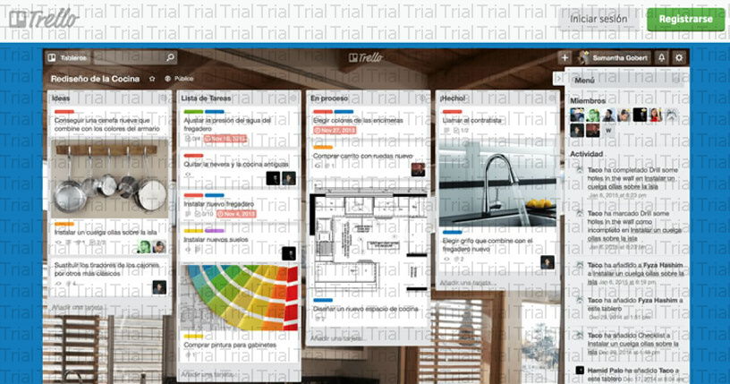
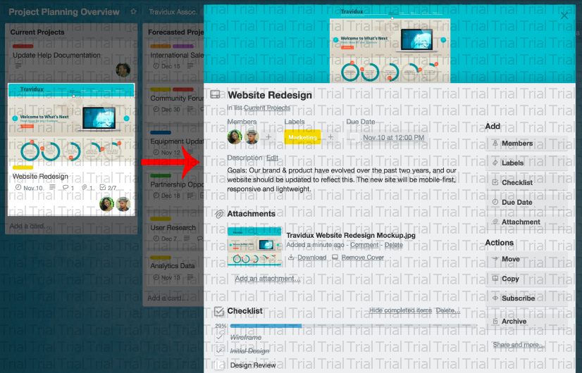
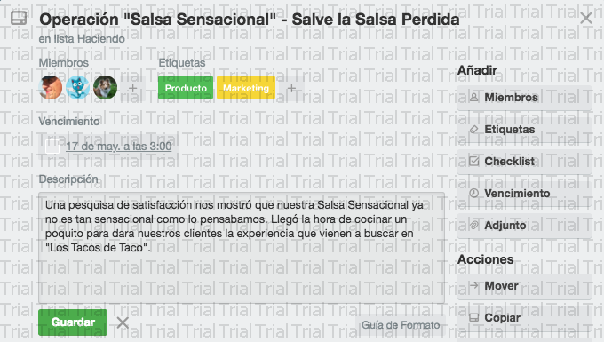
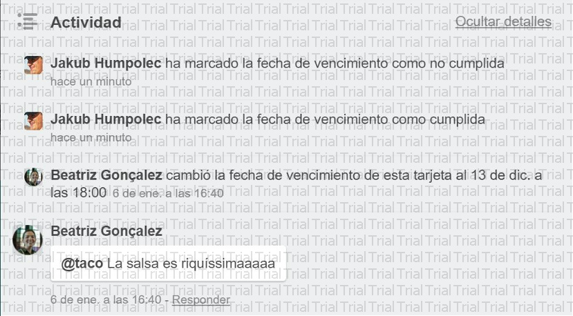

Reverso de una tarjeta
Hagamos clic en una tarjeta para darle la vuelta y observarla con más atención. A esta parte se le denomina el "reverso de la tarjeta" y dispone de tres secciones principales que vale la pena conocer:

Descripciones de tarjetas - En el campo de descripción puede añadir información más específica sobre su tarjeta, enlaces a sitios web o instrucciones paso a paso. Para añadir detalles a su tarjeta, haga clic en "Editar la descripción" en la parte superior del dorso de la tarjeta. Incluso puede aplicar formato al texto con Marckdown

Comentarios y actividad - Se pueden añadir comentarios a las tarjetas al comunicarse o colaborar con los miembros del equipo para, por ejemplo, transmitir opiniones o actualizaciones. Mencione a un miembro de su tablero o equipo en un comentario con una @ y este recibirá una notificación en Trello. La fuente de actividades muestra el historial de comentarios y acciones que se han realizado en una tarjeta.

Añadir - La sección “Añadir” le proporciona más herramientas para el reverso de una tarjeta.
- Añadir - La sección “Añadir” le proporciona más herramientas para el reverso de una tarjeta.
Añada miembros a las tarjetas para asignar personas a las tareas, y mire con facilidad lo que está haciendo cada uno y lo que todavía queda por hacer.
Añada Checklists a la tarjetas que requieran subtareas o presenten múltiples pasos para garantizar que no se quede nada en el tintero. Si lo desea, incluso puede copiar checklists de otras tarjetas en el tablero y asignar personas a elementos de la checklist mencionándolas añadiendo una @.
Añada una Fecha de vencimiento a las tarjetas que deban cumplir un plazo para que los miembros de la tarjeta reciban una notificación 24 horas antes de que termine el plazo. Una vez que se terminen las tareas, se pueden marcar las fechas de vencimiento como finalizadas.
Añada adjuntos tanto desde su ordenador como desde diversos servicios de almacenamiento en la nube como Dropbox, Google Drive, Box y OneDrive.